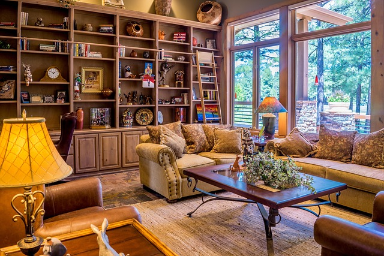

Dört adımda teslim

1 · AlınırRandevu saatinde kapıdan teslim alınır.

2 · YıkanırLeke ön işlemi, sonra yıkama.

3 · KururKurutulur, taranır, paketlenir.

4 · GelirAdresinize bırakılır.
Ölçüyü yazın, fiyatı hemen görün. Gün ve saat aralığını seçin, halınızın hangi aşamada olduğunu telefondan izleyin.
En, boy, adet ve türü girin. Koltuk takımı ve yatak da ekleyin; toplam anında hesaplanır.
1 · AlınırRandevu saatinde kapıdan teslim alınır.
2 · YıkanırLeke ön işlemi, sonra yıkama.
3 · KururKurutulur, taranır, paketlenir.

4 · GelirAdresinize bırakılır.
Gün ve saat aralığı seçin; dolu saatler gri görünür.

Takip kodunu yazın; alındı, yıkanıyor, kuruyor, yolda aşamalarını görün.
Lalezar Halı & Koltuk Yıkama kurgusal bir işletmedir · Fiyatlar ve saatler örnektir, gerçek bilgiyi işletme belirler · Kepez / Antalya